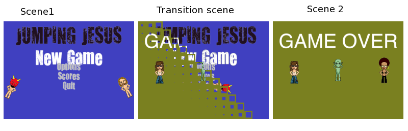

Scenes & Transitions¶
Using Director’s API¶
As we mentioned earlier, one of the main responsibilities of the Director is to manage the control flow of the scenes.
To do this, the director provides an API:
director.replace(new_scene)
director.push(new_scene)
director.pop()
Use Director.replace() to replace the current scene with a new one,
and use Director.push() to push a new scene on the stack.
The old scene will be stacked under the new one.
You can remove a scene from the stack using Director.pop().
When a new scene is pushed or replaced, these actions will be executed:
# calls on_exit on the 'old' scene
outgoing_scene.on_exit()
# disable handlers
outgoing_scene.enable_handlers(False)
# calls on_enter() on the 'new' scene
incoming_scene.on_enter()
# enable handlers
incoming_scene.enable_handlers(True)
When a Scene is entered, it will propagate the on_enter message
to all its children, and its children will do the same with their children,
and so on.
The same happens with the on_exit message.
Transitions¶
A nicer way to change between scenes, is to decorate the new scene with a Transition Scene.
Technically, a transition scene is a scene that performs a transition effect before setting control to the new scene.
And visually, a transition scene is like the transitions you see using any presentation software like OpenOffice Impress, Apple’s KeyNote or PowerPoint.
Example:
# import all the transitions
from cocos.scenes import *
# using director replace
# using the Fade-Top-Right Transition that lasts 2 seconds
director.replace(FadeTRTransition(gameover_scene, duration=2))
# or, using 'push' with the Flip-X transition that lasts 1 second.
director.push(FlipX3DTransition(gameover_scene, duration=1))
- List of available transitions: